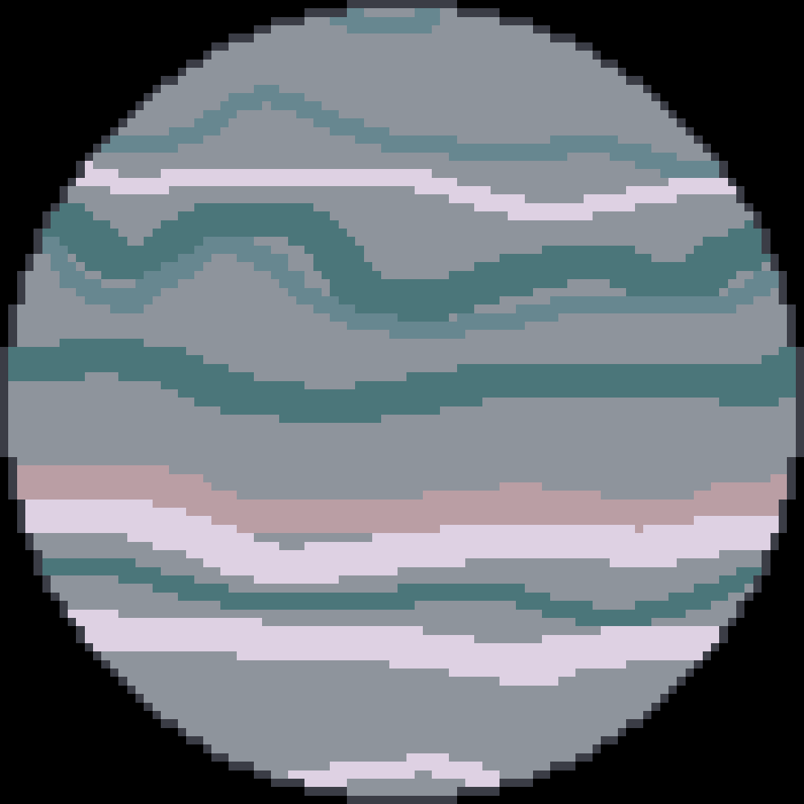

PSR J1719-1438 b är en exoplanet som ligger 3914 ljusår från jorden. Det har en massa som är 20% större än Jupiter. Det som skiljer PSR J1719-1438 b från Jupiter är att den kretsar väldigt nära sin stjärna. Ett år på planeten är lika med 0,1 dygn på jorden. PSR J1719-1438 b kretsar runt sin stjärna på cirka två och en halv timmar. Som jämförelse tar det 88 dagar för Merkurius att kretsa runt solen.